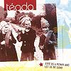

Celtic Lyrics Corner > Artists & Groups > Téada > Give Us A Penny And Let Us Be Gone > Bríd Thomáis Mhurchadha
|  | Bríd Thomáis Mhurchadha |
| Credits : | Traditional; arranged by Téada |
| Appears On : | Give Us A Penny And Let Us Be Gone |
| Language : | Gaeilge (Irish Gaelic) |
| Lyrics : | English Translation : |
| 'S, a Bhideach na gcarad | Oh little one, my friend |
| Tuig feasta nach súgradh é | Understand it's no fun |
| Ó thug mo chroí gean duit | Since my heart gave affection to you |
| Ar mhalairt ná diúltaigh mé | In exchange, don't refuse me |
| Má shíl tú mé 'mhealladh | If you thought to woo me |
| Le bladar deas ciúin do bhéil | With the quiet sweet talk of your mouth |
| Ach go dtug mise gean duit | But that I gave affection to you |
| Seachas cailíní deas an tsaoil | Rather than all the lovely girls in the world |
| 'S, a Bhríd Thomáis Mhurcha | And, Bríd Thomáis Mhurcha |
| Molaimse an barr leat féin | I praise you to the heights |
| Ar ghile, ar fhinne | In brightness, in fairness |
| Ar dheise 'gus áille méin | In bestness and lovely demeanor |
| Tá a cúilín deas triop'llach | Her mane is lovely and shapely |
| 'S í fite mar thrilseán óir | And woven like something gold |
| 'S an té a bheadh gan amharc | And he who is without sight |
| Go dtabharfadh sé soilse dó | It would give light to him |
| Rachad go Gaillimh | I would go to Galway |
| Go gceannaí mé gairdín úll | And buy an orchard |
| Loingeas ar farraig' le haghaidh | A fleet on the sea |
| Bheith a' déanamh spóirt | So as to be making sport |
| 'Filleadh ó Shligeach dom | To return from Sligo |
| 'Gus leid bheag 'fháil do m'chomhair | And an opportunity to find in front of me |
| 'S ní chónóinn fá bhealach | And I would not tarry along the way |
| Go mblaisfinn de phóg mo stóir | Until I tasted the kiss of my darling |
| Má bhí mise folamh | If I was empty |
| Dar m'fhocal, ba mhór a' scéal | Upon my word, a big story it would be |
| Is a liachtaí bean deas | And __ lovely woman |
| A thug taitneamh do ghlór mo bhéil | Who gave joy to the sound of my voice |
| Dá mbeadh sé 'g cur seaca | If it was frosty |
| 'G cur sneachta i ngach ceard den spéir | Snowing in every part of the sky |
| Ach tusa a bheith i m'aice | But you to be beside me |
| Ní aireoinnse buaireamh an tsaoil | I would not feel the sorrow of life |
| 'S, a Aonmhac Mhuire | Oh only Son of Mary |
| 'Chuir an cuileann tríd a' bhféar a' fás | The __ went through the growing grass |
| Nach mise an trua Mhuire | Isn't it my sorrow, oh Mary |
| 'S mé a' caill' lúth na ngéag le grá? | That I lost the energy in my limbs through love? |
| Ach má tá sé 'nár gcinniúint | But if it's our destiny |
| Nach féidir dúinn a chéile 'fháil | That we cannot have each other |
| Bíodh tusa 'do choinneal | Be you keeping yourself |
| 'S beidh mise i m'fhéileacán | And I will become gay |